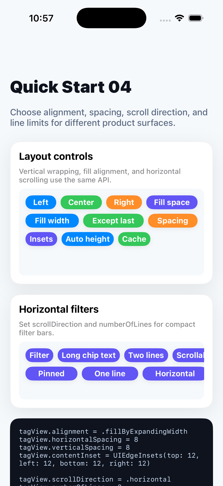

Quick Start 04
Control layout behavior
Use the same view for wrapping tag clouds, fill-width rows, and horizontal filter bars.
tagView.alignment = .fillByExpandingWidth
tagView.horizontalSpacing = 8
tagView.verticalSpacing = 8
tagView.contentInset = UIEdgeInsets(top: 12, left: 12, bottom: 12, right: 12)
tagView.scrollDirection = .horizontal
tagView.numberOfLines = 2
tagView.showsHorizontalScrollIndicator = false
tagView.reload()